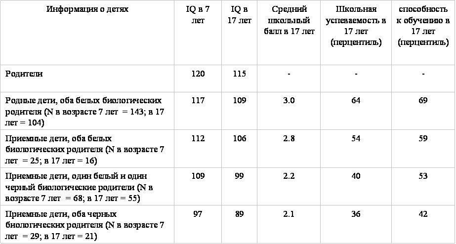

Роман Фролов
25 фактов о человеческом интеллекте: заявление ведущих экспертов о состоянии дел в современной науке
Содержание:
13 декабря 1994 года произошло редкое в своем роде событие: Wall Street Journal опубликовал статью под названием «Ведущие ученые об интеллекте» (на всякий случай — дубликат на сайте), подписанную пятьюдесятью двумя американскими профессорами, представлявших различные дисциплины психологии, антропологии и социологии, и являвшимися ведущими экспертами в науке о человеческом интеллекте. Совместное комьюнике академических ученых о состоянии дел в какой-либо области науки уже само по себе является необычным актом, но заявление для прессы, сделанное столь выдающейся и разнородной группой независимых профессионалов, стало событием по-настоящему уникальным. По словам Линды Готтфредсон, профессора психологии Дэлавэрского университета и автора этой инициативы, нужда в подобной декларации была вызвана беспрецедентным в истории науки несоответствием между научным знанием об интеллекте и мнением публики на эту тему.
Публикация скандально-знаменитой книги Ричарда Хернстейна и Чарльза Мюррэя «Колоколообразная Кривая» («The Bell Curve») в 1994 году, в которой авторы заявили о первостепенной роли интеллекта во всех сферах человеческой деятельности и о значительных различиях в интеллекте между индивидуумами и разными этническими группами, вызвала настоящий ураган в американской и мировой англоязычной прессе. Критика зачастую сопровождалась настольно значительными искажениями и прямыми фальсификациями ключевых фактов об интеллекте, что эксперты, изучающие этот вопрос, сочли своим профессиональным долгом вмешаться в публичные дебаты.
Что же известно современной науке о человеческом интеллекте? Ниже дословно приведены все двадцать пять утверждений из совместной декларации с дополнительными комментариями, объяснениями и примерами.
Определение и измерение интеллекта
«1. Интеллект – это очень общая умственная способность, которая, в частности, включает умение рассуждать, планировать, решать задач, абстрактному мышлению, пониманию сложных идей, быстрому обучению, и обучению из собственного и чужого опыта. Интеллект – это не просто способность к «книжному обучению», не узкий академический навык, и не умение решать тесты и сдавать экзамены. Интеллект обозначает гораздо более широкую и глубокую способность к познанию окружающего мира – к «улавливанию», к «пониманию сути вещей», к способности принимать оптимальные решения.
2. Определенный таким образом интеллект может быть измерен, и тесты интеллекта (IQ тесты) делают это очень хорошо. Эти тесты являются одними из самых аккуратных (технически надежными и достоверными) из всех психологических тестов и методов. Они не измеряют и не создаются для измерения творческого потенциала, характера, личностных качеств и других важных различий между людьми.»
Это определение интеллекта происходит из психометрического подхода к изучению когнитивного компонента человеческой личности. Психометрия является практическим приложением теории образовательных и психологических измерений. Арсенал психометрии состоит из разнообразных психологических и психофизиологических тестов, разработанных для количественной оценки свойств личности. Исторически, основы этой науки были заложены великим английским ученым сэром Фрэнсисом Гальтоном в конце девятнадцатого века, который пытался найти надежный инструмент для изучения человеческого интеллекта. Хотя современная психометрия исследует самые разнообразные характеристики личности, центральным ее объектом остаются когнитивные способности человека.
Число определений и «видов» интеллекта в современной психологии значительно превышает количество теорий, пытавшихся познать, описать и систематизировать механизмы мышления в течение последних ста пятидесяти лет. Некоторые психологи, как, к примеру, Говард Гарднер, автор «теории множественных интеллектов», понимают под различными «интеллектами» то, что другие исследователи полагают лишь отдельными и, зачастую, специальными и узкими свойствами мышления (по Гарднеру существуют кинестетический, межперсональный, вербальный, логико-математический, персонально-рефлективный, зрительно-пространственный, музыкальный и др. «интеллекты»).
Альфред Бинет, создавший первый работающий тест интеллекта в начале двадцатого века, определял интеллект как «способность к здравому суждению, здравый смысл, смекалку, инициативу, способность к приспособлению к обстоятельствам и ... самокритике», а сэр Цирил Берт, автор фундаментального исследования близнецов, продемонстрировавшего огромную роль наследственности в природе человеческой личности, говорил об интеллекте как о «врожденной общей способности к мышлению». Последние два определения наиболее близки к понятию интеллекта в современном психометрическом контексте, который подразумевает существование некой общей способности к абстрактному мышлению, в различной мере выраженной у разных людей, и которую можно количественно измерить с помощью специальных инструментов, IQ тестов.
Принципиальной целью IQ тестов является психологическая диагностика умственной отсталости, отставания в развитии, и предсказание образовательных и профессиональных результатов для индивидуумов и культурно-однородных групп. IQ тесты являются отличным средством измерения относительных различий в общей способности к обучению и абстрактному мышлению. Это значит, что они позволяют ранжировать индивидуумов по уровню когнитивных способностей внутри той популяционной и возрастной группы, для которой эти тесты были откалиброваны. IQ тесты не измеряют абсолютный уровень интеллекта, и именно в отсутствии надежного инструмента для измерения абсолютной величины умственных способностей и заключается одна из главных проблем современной психометрии.
Несмотря на продолжающуюся полемику вокруг IQ тестов, можно с уверенностью заявить, что у них нет конкурентов по предсказательной силе и надежности. Замечательной иллюстрацией применения IQ тестов являются американские вооруженные силы, одна из самых прагматичных организаций в мире. По американским законам, тестирование интеллекта при приеме на работу почти повсеместно запрещено из-за так называемых непропорциональных результатов: низких оценок афроамериканцев и представителей некоторых других расово-этнических групп по сравнению с белыми (тестирование разрешается, если работодатель способен в судебном порядке доказать, что тестируемые характеристики являются непременным и неотъемлемым атрибутом для данного вида деятельности). В американской армии в настоящее время используется сильно нагруженный по g-фактору (см. ниже) Квалификационный Тест Вооруженных Сил, а раньше использовались другие тесты, аналогичные тестам IQ. Тестирование интеллекта в американской армии осуществляется на протяжении вот уже почти ста лет, и большие средства регулярно вкладываются для создания и нормирования новых тестов. Результаты IQ тестирования при отборе рекрутов являются не только необходимыми для определения профессиональной пригодности, но зачастую и достаточными для предсказания успешности в обучении той или иной военной специальности, причем для разных категорий военных профессий существуют различные специальные требования к IQ кандидатов. Из-за требований к интеллекту лишь 1% новобранцев имеет IQ 92 и ниже, в результате чего отсеивается больше половины потенциальных рекрутов-афроамериканцев и примерно половина рекрутов-латиноамериканцев.
«3. Несмотря на то что существует много видов IQ тестов, все они измеряют тот же самый интеллект. Одни тесты используют слова или числа, и требуют специфических культурных знаний (таких как знание языка и словарный запас). Другие же являются «культурно нейтральными», и используют разного рода формы или геометрические паттерны, и требуют знания лишь простых и универсальных концепций (много-мало, верх-вниз, пустой-заполненный).»
В 1904 году английский психолог Чарльз Спирмэн открыл общий фактор интеллекта. Спирмэн обнаружил, что оценки школьников в на первый взгляд независимых дисциплинах связаны между собой. Например, если ученик хорошо успевает в математике, то он обычно хорошо успевает и по другим предметам, требующим умственных усилий, и наоборот. Позже было доказано, что подобная зависимость существуют для результатов самых разнообразных ментальных тестов (если, к примеру, студент успешно проходит тест SAT, то он с большой вероятностью получит пропорционально высокий балл по экзамену ACT). Модель Спирмэна, объясняющая этот феномен, предполагала, что для решения какого-либо теста необходимы два типа способностей: специальная (вербальная, логико-математическая, пространственная и т.д., в зависимости от вида теста) и общая когнитивная способность, которую Спирмэн назвал фактором g, общим фактором интеллекта (от английского слова «general»).
Сегодня, по прошествии века после открытия Спирмэна, совокупность накопленных знаний подтверждает первостепенное значение g-фактора в психометрическом интеллекте. Величину g-фактора определяют методом главных компонент, изобретенным Карлом Пирсоном, знаменитым статистиком, учеником и последователем Гальтона, за несколько лет до открытия g-фактора. G-фактор объясняет большую часть сходства между результатами разных тестов для данного индивидуума. Другими словами, причинами различия в результатах специальных тестов являются по разному развитые способности индивидуума, «культурное» содержание теста, и ошибка измерения. Причиной же схожести этих результатов между собой является общий фактор интеллекта. Он как бы образует основание пирамиды, на последующих ступенях которой находятся все более специальные когнитивные способности, при этом каждая из последующих объясняет все меньшую долю вариации.
Понятие «величины корреляции» между двумя явлениями, например, между IQ и чем-либо еще, часто встречающееся в этой статье, показывает насколько изменение в одной величине объясняет изменение в другой; например, корреляция в 40% или 0.4 между IQ и размером мозга означает, что 16% или 0.16 вариации в IQ объясняются размерами мозга (величина вариации равна квадрату величины корреляции). Величина корреляции представляется в долях от единицы, между 1 и -1, или же, альтернативно, в процентах, при этом положительная корреляция означает, что величина «у» увеличивается при увеличении величины «х», а отрицательная – наоборот. Корреляцию можно понимать как зависимость одной величины от другой, и в социальных науках обычно используются три условных категории: слабая корреляция от 0 до 0.2, умеренная корреляция от 0.2 до 0.4, и сильная корреляция между 0.4 и 0.6. Очень сильные корреляции (больше 0.6) в социальных науках встречаются очень редко.
G-фактор коррелирует с IQ примерно на 90%, и поэтому эти термины часто используются как синонимы. Если во время сеанса психодиагностики оценки по разным специализированным тестам очень сильно различаются, то это является показанием для углубленного обследования с целью исключения психопатологии или специфических проблем в обучении. Важно понимать, что IQ тесты являются средством измерения, а объектом измерения является g-фактор. «Активным компонентом» IQ тестов, по словам Линды Готтфредсон, является сложность задач в тесте, и если два различных теста измеряют g одинаковым образом, то есть одинаково «нагружены по g», то оба этих теста будут предсказывать успешность в каком-либо одном и том же аспекте деятельности одинаково хорошо (или плохо).
G-фактор можно представить по аналогии с категорией «размера». Размер трехмерного объекта невозможно установить одним-единственным актом измерения, для этого, даже в случае простейшего геометрически правильного тела, необходимо выполнить как минимум три измерения. Но каждое из измерений обычно положительно коррелирует как с размером объекта, так и с другими измерениями по отдельности. Точно так же, как размер тела может быть получен из набора результатов измерений с помощью математических процедур, величина g-фактора может быть вычислена методом главных компонент по результатам тестирования с использованием «батареи» специализированных IQ тестов.
По мнению американского психолога Артура Дженсена, g – это «активный ингредиент» в IQ оценках, отражающий процессы, отвечающие за успешное решение всевозможных ментальных задач. Психофизиологические эксперименты подтверждают, что g коррелирует со скоростью и эффективностью умственных процессов. Говорят, что чем более IQ тест нагружен по g, то тем более он надежен. Разные тесты имеют различную нагруженность по g-фактору, но теста, «содержащего» g на 100% не существует. Поэтому, для получения надежных результатов с наименьшей погрешностью, используются тесты с большим числом задач и батареи тестов. Широко известны разнообразные варианты прогрессивных матриц Равена, представляющих из себя серии геометрических рисунков, связанных одной или несколькими логическими закономерностями, которые необходимо обнаружить, чтобы правильно подобрать недостающий рисунок. Такие тесты считаются наиболее нагруженными по g-фактору и практически культурно-нейтральными. Но даже матрицы Равена содержат в себе значительный независимый от g компонент.
Феномен постепенного роста средних IQ оценок, на 1-3 пункта IQ в декаду, наблюдаемый в течение второй половины прошлого века в развитых странах (наименованный в «Колоколообразной кривой» эффектом Флинна в честь обнаружившего его исследователя), и особенно значительный для тестов Равена, по рассчетам Филиппа Раштона, связан с независимыми от g компонентами этих тестов (Rushton & Jensen, 2005). Интересно, что эффект Флинна затрагивает не все распределение IQ, но сконцентрирован в левой половине кривой, в области низких оценок, что связывается с повсеместным улучшением условий жизни малообеспеченных слоев населения. Эффект Флинна не связан с образованием, поскольку он обнаруживается среди детей в возрасте 2 лет. По мнению английского психолога Ричарда Линна, эффект Флинна является проявлением оптимизации фенотипического интеллекта из-за улучшения питания населения в развитых странах. Действительно, в течение 20-го века, средний рост и размеры мозга увеличились на одно стандартное отклонение, и эти изменения происходили одновременно с увеличением в IQ. Поскольку фенотипический диапазон любого признака ограничен влиянием генов, то нельзя ожидать бесконечного продолжения этой тенденции без целенаправленных евгенических изменений в генофонде. Таким образом, можно ожидать, что эффект Флинна в развитых странах прекратится в скором времени, точно так же, как прекратилось увеличение длины тела и размеров мозга. И в самом деле, имеющиеся данные демонстрируют замедление роста среднего IQ в популяциях Первого мира.
«4. Распределение людей по IQ континууму, от меньшего к большему, хорошо описывается колоколообразной кривой (в терминах статистики, «кривой нормального распределения»). Большинство людей скапливается вокруг среднего (IQ 100). Меньшее число очень умны или очень глупы: около 3% американцев имеют IQ выше 130 (это число часто считается порогом «одаренности»), и примерно столько же имеют оценки ниже IQ 70 (IQ 70-75 часто считается порогом умственной отсталости.»
Первым функциональным стандартным IQ тестом является тест Стэнфорда-Бинета, созданный в начале прошлого века по заданию французского правительства для ранней диагностики умственной отсталости у детей. Бинет полагал, что, хотя индивидуальное обследование ребенка имеет значительные преимущества, достоинства стандартизированного инструмента для массовой психологической диагностики значительно перевешивают недостатки обезличенности теста. Созданный Бинетом и модифицированный Льюисом Терманом из Стэнфордского университета, тест состоял из нескольких десятков заданий увеличивающейся сложности.
Как предположил Бинет, умственные способности детей постепенно растут по мере взросления, и поэтому дети разного возраста характеризуются различным центрированием кривых распределения тестовых баллов, то есть средняя оценка репрезентативной младшей группы детей всегда ниже средней оценки более старшей группы. Так родилась важная концепция «умственного» или «ментального» возраста. Например, ребенок 7 лет с IQ 125 (для оценки умственного развития детей, средний IQ каждой годичной возрастной группы принимается за 100), демонстрирует умственное развитие свойственное среднему представителю группы 12-летних детей (до 16-17 лет средний ребенок европейского происхождения прибавляет примерно 4-5 пунктов IQ ежегодно), и, соответственно, считается имеющим ментальный возраст 12 лет, то есть опережающим по развитию свою возрастную группу.
В случае стандартного отклонения в 15 пунктов (стандартное отклонение оценивает разброс или вариацию значений) и большой репрезентативной выборки (людей европейского происхождения), 68% людей будут обладать «нормальным» интеллектом (IQ 85-115), по 13.6% будут «умными» или «глупыми» (IQ 115-130 и 85-70, соответственно), и по 2.2% будут «талантливыми» или «умственно-отсталыми» (IQ >130 и <70, соответственно) (приведенные выше в определении 3% индивидуумов в США с оценками выше и ниже IQ 130 и 70 очевидно происходят из расово-этнической неоднородности американской популяции (см. ниже)).
Чтобы представить, что такое уровень IQ 100, полезно рассмотреть пример вопроса, на который правильно отвечает лишь половина тестируемых подростков. Задача следующая: «В 2005 году в школе было 90 учеников. В 2006 году число студентов увеличилось на 10%. Сколько учащихся обучалось в школе в 2006 году?». Очевидно, что для нахождения правильного ответа (99 человек) нужно произвести акт рассуждения и выполнить две арифметические процедуры (найти 10% от 90 и прибавить 9 к 90). Поскольку подобные арифметические вычисления способны выполнять все школьники, то проблемы с решением у половины экзаменуемых были вызваны неспособностью рассудить о необходимости произвести нужные процедуры в правильном порядке.
«5. Тесты интеллекта не являются культурно предвзятыми против черных американцев или какой-либо иной группы урожденных англоязычных американцев. IQ оценки обладают одинаковой предсказательной силой для всех американцев, независимо от расы и социального статуса. Лицам, не понимающим английский язык, может быть назначен невербальный тест или же тест на родном языке.»
В полемике вокруг IQ тестов, вопрос об их культурной специфичности или предвзятости занимает одно из центральных мест из-за различных средних результатов для разных расово-этнических групп. Культурный контекст, требующий специальных знаний, был действительно значительным в первых IQ тестах в начале двадцатого века. Однако современные профессиональные тесты являются минимально культурно-специфичными и не предрасположены против какой-либо этнической группы. Стоит процитировать заявление экспертной группы Американской психологической ассоциации: «Если рассматривать IQ тесты как инструменты для предсказания успешности будущей деятельности, то нет доказательств их предвзятости против афроамериканцев» (Rushton & Jensen, 2005).
Если бы IQ тесты были культурно-предвзятыми против какой-либо группы, то они бы ошибочно предсказывали успешность деятельности данной группы. Что это значит? Тест предсказывает, что, если, например, средний IQ группы равен 120, то эта группа будет чрезвычайно успешной – практически каждый сможет получить высшее образование и добиться значительных профессиональных успехов. И наоборот, если средний IQ группы равен 80, то лишь считанные единицы из этой группы смогут осилить высшее образование, а подавляющее большинство будет не в состоянии успешно завершить даже стандартную учебную программу средней школы. Если бы тест был культурно-предвзятым против, скажем, группы нигерийцев, и показывал бы их IQ равным 80, в то время как их действительный интеллект был бы значительно выше, то тест произвел бы ошибочное предсказание успешности группы нигерийцев, что проявилось бы в успешности данной группы, намного превышающей предсказанную тестом. Например, если бы IQ тесты показывали средний интеллект нигерийской популяции равным 80, тогда как их «настоящий» уровень интеллекта соответствовал бы IQ 100, то тогда из нигерийской популяции, проживающей в какой-либо Западной стране (чтобы уравнять влияние среды) выходило бы столько же специалистов высокой квалификации (врачей, инженеров, управленцев высшего звена и т. д.) на душу населения, как и из окружающей европейской популяции (IQ 100)
«6. Лежащие в основе интеллекта нейрофизиологические процессы еще малоизученны. Современные исследования занимаются изучением, к примеру, скорости передачи нейронных сигналов, потребления глюкозы (энергии), и электрической активности мозга.»
Существует несколько важных анатомических и физиологических коррелятов между интеллектом, измеряемым IQ тестами, и центральной нервной системой (ЦНС). Около 25 современных исследований с использованием методов магнитно-ядерного резонанса (МЯР) продемонстрировали сильную положительную зависимость IQ от общих размеров мозга в (средняя корреляция по всем исследованиям равна 0.4), тем самым подтвердив известные до этого более противоречивые данные о связи размеров головы и интеллекта, которые регулярно показывали, что IQ и внешние размеры головы умеренно, но статистически-значимо коррелируют между собой как 0.2 (Rushton & Jensen, 2005).
Поскольку мозг является субстратом интеллекта, то резонно предполагать, что последний будет меняться с увеличением объема мозга и усложнением его архитектуры. Увеличение числа вычислительных элементов, нейронов, с ростом объемом мозга, в принципе должно сопровождаться изменениями в вычислительной мощности. Большая часть из примерно 13 миллиардов нейронов коры отвечает за контроль тела и органов чувств (поэтому размер мозга слона превышает размер мозга человека, но объем мозга человека на единицу площади тела не знает равных среди представителей животного мира), и увеличение числа нейронов «всего лишь» на несколько миллионов может предоставить значительные адаптивные преимущества.
Достаточно надежно установлена связь между IQ и топографией мозга. Лица с повреждениями во фронтальных долях мозга показывают низкие результаты в решении абстрактных задач. Объем серого и белого вещества во фронтальных долях положительно коррелирует с IQ. Более того, исследования по нейровизуализации когнитивных процессов отнесли происхождение этой корреляции к латеральной префронтальной коре головного мозга (Gray & Thompson, 2004). Фенотипические корреляции между IQ и различными элементами серого (фронтальная, затылочная и парагиппокампальная кора) и белого (иррадиация мозолистого тела, верхняя затылочнофронтальная и левая зрительная иррадиация) вещества были умеренными, но значительными (0.35) (Hulshoff et al., 2006). Недавно была обнаружена интересная связь между IQ и динамикой развития структуры коры мозга. Дети, которые в позднем возрасте демонстрируют высокий IQ, в более раннем возрасте характеризуются более тонкой корой, чем их в будущем менее смышленные сверстники (Shaw et al., 2006).
Важным психофизиологическим коррелятом является сильная связь между временем сенсомоторной реакции и IQ. Быстрота мышления является признаком высокого интеллекта, и взаимосвязь между IQ и временем реакции проявляется даже в таких элементарных тестах как простая сенсомоторная реакция, время которой коррелирует с IQ на 20%. Однако гораздо более значительная корреляция (67%) обнаруживается, когда используется несколько типов задач и разультаты аналитически комбинируются. Подобные психофизиологические тесты на время реакции являются простейшими когнитивными задачами и их важность и предсказательный потенциал на первый взгляд могут показаться очень незначительным. Однако уникальной особенностью этих исследований с использованием «коробки Дженсена с кнопками» является их способность измерять g в абсолютных, а не в относительных единицах. Время реакции измеряется в миллисекундах, у времени есть начало отсчета, ноль, и инвариантные единицы, никак не зависящие от свойств подопытной группы. Поэтому можно ожидать, что по мере усовершенствования подобных психофизиологических методов, ученые получат в свой арсенал средство измерения абсолютного уровня интеллекта.
Сэр Фрэнсис Гальтон, в своих неустанных поисках инструмента для измерения когнитивных способностей, опередил время на столетие, попытавшись найти зависимость скорости реакции от школьных оценок. Но так как школьные оценки коррелируют со скоростью реакции намного слабее чем IQ, то, в отсутствие современных тестов и статистических методов, Гальтон потерпел фиаско.
Различия между группами людей
«7. Представители каждой расово-этнической группы могут быть найдены на каждом уровне IQ. Кривые распределения IQ разных групп в значительной степени пересекаются, но группы часто различаются в том, в каком месте шкалы IQ скапливается наибольшее число их представителей. Колоколообразные кривые для некоторых групп (евреи и уроженцы Восточной Азии) имеют средний IQ несколько выше чем средний IQ белых. Другие группы (африканцы и латиноамериканцы) центрированы несколько ниже чем белые европейского происхождения.
8. Колоколообразная кривая для белых центрирована около IQ 100, для афроамериканцев – примерно около IQ 85, для для различных групп латиноамериканцев – примерно посередине интервала, разделяющего средние IQ белых и афроамериканцев. Насколько средний IQ азиатов и евреев выше среднего IQ белых, пока еще с точностью не установлено.»
А вот тут показательно, что величина типа больше, но насколько — не установлено. Это, простите, как? Некоторые мысли по поводу я высказывал здесь.
Факт существования различий в когнитивных способностях между разными расово-этническими группами уже не является предметом технической дискуссии. Для различных расовых групп установлены следующие величины среднего IQ: австралийские аборигены, 60-65; суб-сахарные африканцы, 70-75; афроамериканцы, 85; жители Юго-Восточной Азии, Индии и Океании, 85; латиноамериканцы, 92; белые европейского происхождения, 100; уроженцы Северо-Восточной Азии (Китая, Кореи, Японии), около 106; евреи-ашкенази, 110-115 (David & Lynn, 2007). Некоторые данные свидетельствуют о чрезвычайно высоком среднем IQ представителей высшей индусской касты «брахманов» (священнослужителей), близким к IQ евреев-ашкенази.
На первый взгляд, величины IQ австралийских аборигенов и жителей суб-сахарной Африки выглядят неправдоподобно низкими, что может вызвать сомнение в надежности тестов. Действительно, если полагать IQ 70 порогом умственной отсталости, то получается, что 40% суб-сахарных африканцев и больше половины австралийских аборигенов попадают в категорию умственно отсталых. Однако существует ряд причин, которые позволяют считать результаты тестирования этих расово-этнических групп достоверными.
Во-первых, для интерпретации данных IQ удобнее использовать концепцию умственного возраста. Тогда, полагая что IQ 100 характеризует среднего белого 16 лет, средний ментальный возраст австралийских аборигенов – это 8 – 9 лет, а суб-сахарных африканцев – 10 – 11 лет. Взрослый человек с интеллектом белого ребенка 8, а тем более 10 лет, вполне способен самостоятельно существовать и быть неплохо приспособленным к окружающей среде. Ребенок 10 лет может управлять автомобилем, использовать различные технические устройства, включая оружие, и быть вполне социально адекватным. Нужно учитывать и то, что умственная отсталость среди европейцев часто бывает вызвана серьезными врожденными или приобретенными заболеваниями или травмами, и сопровождается выраженными физическими и психическими дефектами, что обычно приводит к значительной социальной дизадаптации и повышенной заметности таких людей.
Во-вторых, число разнообразных исследований когнитивных способностей африканцев велико, и их результаты очень близки, и, что самое главное, предсказательная сила IQ тестов для африканцев не меньше, чем для представителей прочих рас, что означает культурную инвариантность современных IQ тестов. Например, средний IQ черных студентов южно-африканских университетов составляет около 85 – 90, что на 15 пунктов превышает IQ общей популяции. Средний IQ студентов европейских университетов близок к 115, также на 15 пунктов выше уровня среднего европейца. Средний IQ студентов в когнитивно-нагруженных дисциплинах, таких как инженерное дело, теоретическая физика и математика, составляет около 130 среди европейцев и 100-105 среди африканских студентов, что на два стандартных отклонения выше среднего уровня соответствующих популяций (Rushton & Jensen, 2005).
В-третьих, расово-этнический IQ-континуум непрерывен. Межрасовые гибриды демонстрируют IQ примерно посередине между средними величинами IQ родительских популяций (Lynn, 2002; Rowe, 2002). Хотя причины различий по интеллекту между группами людей могут быть отличными от причин внутригрупповой вариации, но все известные анатомические и психофизиологические корреляты, предсказывающие внутригрупповую вариацию (размеры мозга, скорость реакции и т.д.), сохраняются и в отношении межгрупповых различий (см. ниже).
Практическое значение
«9. IQ сильно связан, возможно сильнее чем любое другое измеряемое свойство человеческой личности, со множеством важных образовательных, профессиональных, экономических и социальных результатов. Его связь с благополучием и успешностью людей чрезвычайно высока в таких областях как образование и военное дело, достаточно высока в отношении социальной компетентности (хорошее материальное положение), и умеренно, но надежно высока для предсказания других социальных результатов, таких как законопослушность.
10. Высокий IQ является преимуществом в жизни, поскольку практически все виды деятельности требуют рассудительности и способности принимать решения. Аналогично, низкий IQ ставит его обладателя в менее выгодное положение, особенно в дисфункциональной обстановке. Конечно, высокий IQ гарантирует не больше успеха, чем низкий IQ гарантирует неудачи в жизни. Есть множество исключений, но шансы на успех в нашем обществе выше у лиц с высоким IQ.
11. Практические преимущества высокого IQ возрастают по мере того, как окружающая среда становится более сложной (новой, неоднозначной, изменяющейся, непредсказуемой, или многофакторной). Например, высокий IQ, в общем, необходим для эффективной работы в условиях сложной или меняющейся обстановки (профессиональная и управленческая деятельность), является значительным преимуществом в умеренно сложных видах деятельности (ремесла, офисная, полицейская деятельность), и представляет из себя незначительное преимущество в условиях стереотипной и рутинной работы с минимальными требованиями к способности принимать решения (неквалифицированный труд).
12. Конечно, различия в интеллекте не являются единственным фактором, определяющим успех в образовании, обучении, и высокосложных видах деятельности (никто не утверждает этого), но интеллект зачастую является самым важным фактором. Внутри группы, предварительно отобранной по признаку высокого (или низкого) интеллекта, как, например, в аспирантуре, влияние других факторов на успешность деятельности становится первостепенным.»
Хотя IQ тесты были созданы для предсказания успешности в обучении, и именно
это они делают превосходно, оказалось, что «коэффициент интеллекта» является
наилучшим из существующих на сегодняшний день методов предсказания
персональных, профессиональных и социально-экономических результатов. Связь
IQ практически со всеми аспектами человеческой жизни повсеместна и насквозь
пронизывает ткань общества. Примечательно, однако, что зависимости между
интеллектом и чувством счастья найти не удалось. Приведенные ниже величины
корреляций между IQ и различными индивидуальными и социальными (групповыми)
показателями были получены при исследованиях популяций западных стран, в
основном в Соединенных Штатах.
IQ сильно коррелирует с успешностью
обучения на любом образовательном уровне, в том числе с успеваемостью (0.5)
и с общей продолжительностью обучения (0.55). Например, 55% белых с IQ ниже
75 и 35% с IQ между 75 и 90 не в состоянии окончить среднюю школу, по
сравнению с менее чем 0.4% индивидуумов с IQ выше 110. Групповые различия в
интеллекте проявляются драматическими различиями в успешности освоения того
или иного уровня образования. Так, если в среднем по США 40% молодежи было в
той или иной степени вовлечено в высшее образование, т.е. обучались в
колледже или закончили его (средний IQ по Америке полагаем 100), то среди
евреев (IQ около 110) 87% молодых людей обучались или закончили колледж.
IQ является самым надежным прогностическим фактором при подборе персонала (под надежностью в данном случае понимают корреляцию между IQ, полученным при тестировании с использованием стандартного теста, и успешностью профессиональной деятельности, которая определяется при помощи множества специальных критериев, таких как рейтинг руководителя, продвижение по службе, успешность профессионального обучения, и продолжительность работы в компании. Общий интеллект работника в среднем сильно коррелирует с его профессиональной успешностью. Надежность предсказания успешности профессиональной деятельности сильно зависит от величины интеллектуального компонента профессии, увеличиваясь от 0.2 для неквалифицированного труда до 0.8 для сложных профессий. В мета-анализе Хантера, выполненном в 1984 году, была проанализирована успешность трудовой деятельности более 30,000 человек и было обнаружено, что успешность выполнения обязанностей на начальных трудовых позициях сильнее всего коррелирует с IQ (0.54) по сравнению с испытательным сроком (0.44), биографическим портфолио (0.37), опытом (0.18), интервью (0.14), образованием (0.1), и возрастом (-0.01). Поскольку успешность профессиональной деятельности напрямую связана с экономическими результатами, т. е. с доходом, и IQ тесты успешно предсказывают успешность, то их использование является экономически обоснованным, выгодным и желательным, точно так же как интервью обладает лучшей прогностической силой (0.14) и является экономически более выгодным, чем случайный подбор кандидатов (0.0) (Hunter & Hunter, 1984).
IQ значительно коррелирует с уровнем достатка. Чарльз Мюррэй провел исследование, в котором он сравнивал трудовой доход сиблингов (родных братьев и сестер) с различным уровнем интеллекта, при этом один сиблинг имел IQ в «нормальном» диапазоне между 90 и 109, а второй был умнее (>109) или глупее (<90). Таким образом исследователь смог проконтролировать влияние наследственности и общей для сиблингов среды. Когда сиблинги были в возрасте между двадцатью и тридцатью годами, персональный доход «умных» был в полтора раза выше дохода «нормальных». То же соотношение наблюдалось и в парах «нормальный» - «глупый». При этом разница в материальном положении между по-разному интеллектуально одаренными сиблингами увеличивалась с возрастом (Murray, 1998).
Когда исследователи контролируют (отбирают) экспериментальную группу по близкому IQ, успешность обучения и профессиональной деятельности начинает в большей степени определяться другими личностными качествами, такими как способность к упорной работе и персональная мотивацией. В зависимости от выраженности подобных качеств, лица с относительно низким IQ часто способны достичь более выдающихся результатов, чем их более умные, но менее целеустремленные сверстники.
IQ отрицательно коррелирует с «социальной патологией», включающей взрослую преступность, бедность, безработицу, зависимость от государственных пособий, наличие незаконнорожденных детей и т.д. Усредненная по всем «негативным» социальным исходам корреляция с IQ равна -0.2. Например, 7% белых мужчин с IQ ниже 90 хотя бы один раз в жизни оказываются за решеткой по приговору суда. Для лиц с IQ выше 110 этот шанс меньше 1%. 30% людей с IQ ниже 75 и 16% с IQ между 75 и 90 живут за чертой бедности, по сравнению с менее 3% людей с IQ выше 110. Шанс родить ребенка вне брака в 16 раз выше для женщин с IQ менее 75 (32%), чем для женщин с IQ выше 125. Люди с низким IQ гораздо чаще живут на пособие по безработице, и дольше находятся в поиске работы, нежели их более смышленные сверстники. Все приведенные различия в социальных показателях не дискретны, но непрерывно меняются по мере изменения IQ.
Недавние исследования показали, что люди с более высоким IQ имеют меньшую заболеваемость и более высокую продолжительность жизни. Так, исследование в Шотландии установило, что различие в 15 баллов IQ уменьшает шанс дожить до 76 лет на 20%, а различие в 30 баллов – на 37%. Причины связи здоровья и интеллекта могут быть самыми разнообразными, включая меньшую частоту травм и большее внимание к здоровью, профилактике заболеваний, и здоровому образу жизни у более предусмотрительных и осторожных лиц с высоким интеллектом; а также их лучшее материальное положение (коррелирует с IQ на 50%), и, соответственно, доступность более дорогой и качественной медицинской помощи. Линда Готтфредсон, исследуя связь здоровья и IQ, выдвинула гипотезу, что успешность лечения в современном обществе напрямую связана со способностью пациента пунктуально следовать зачастую сложным врачебным назначениям, что требует умственных усилий. Например, амбулаторное лечение хронических заболеваний требует четкого соблюдения инструкций по приему нескольких препаратов, соблюдения диеты и расписания визитов к врачу и т. д, то есть то, с чем люди с более высоким интеллектом справляются лучше.
Существует еще одна интересная гипотеза, заключающаяся в том, что высокий IQ является отражением общей высокой адаптивности индивидуума, признаком «высокого биологического качества» и здоровья организма, поскольку интеллект является интегральным свойством нервной системы, на анатомию и физиологию которой оказывают влияние большая часть генов (Arden, 2009).
«13. Некоторые личностные качества, специальные таланты, способности, физические возможности, опыт и тому подобное, являются важными (иногда необходимыми) для успешной деятельности во многих профессиях, но они характеризуются гораздо меньшей (или неопределенной) универсальностью или «переносимостью» на другие виды деятельности (то есть будучи важными для какой-либо одной профессии, они могут не иметь совершенно никакого влияния на другую), чем общий интеллект. Некоторые исследователи предпочитают называть эти другие человеческие качества как другие «интеллекты».»
Теория множественных интеллектов Гарднера была уже упомянута выше, другие же популярные теории включают «троичную теорию интеллекта» Роберта Штейнберга (он выделяет аналитический, креативный, и практический «интеллекты») и теорию Даниэля Колемана, который полагал «эмоциональный интеллект», не менее важным, чем «традиционные» виды интеллекта. Однако, в отличие психометрического интеллекта, ни одна из этих теорий не выдержала испытания практикой.
Интересным феноменом являются люди с редким «синдромом мудреца», савантизмом. Эти люди обладают одной или несколькими необычными способностями или талантами, наличие которых резко контрастирует с их посредственными способностями в других областях. По словам Дэрольда Трефферта, психиатра и специалиста в савантизме, таланты савантов «глубоки, но чрезвычайно узки». Например, некоторые саванты способны мгновенно запоминать огромные объемы информации, но только какого-либо одного рода, или могут производить громоздкие математические расчеты в уме («человек – калькулятор»), либо воспроизводить звуки, либо обладать выдающимся артистическим талантом. Примерно половина индивидуумов с савантизмом, как правило, страдает аутизмом, а другая половина имеет какое-либо расстройство развития, умственную отсталость, органическое заболевание или повреждение мозга. В чрезвычайно редких случаях способности саванта обнаруживают у внешне здоровых и нормальных людей.
Нейрофизиологические механизмы савантизма неизвестны, но некоторые исследователи убеждены, что подобные способности не обязательно связаны с патологией нервной системы, но присутствуют в латентном состоянии у каждого человека и могут быть «разбужены» специальным воздействием, таким как низкочастотная транскраниальная магнитная стимуляция (Snyder, 2009).
Происхождение и стабильность внутригрупповых различий в IQ
«14. Индивидуумы различаются в интеллекте из-за различий в окружающей их среде и генетической наследственности. Оценки наследуемости интеллекта варьируют между 0.4 и 0.8 (по шкале от 0 до 1), в большинстве случаев утверждая превосходящую роль генов над влиянием внешней среды в возникновении различий в IQ между людьми. (Величина наследуемости рассчитывается как квадрат коэффициента корреляции между фенотипом и генотипом). Если бы окружающая среда была бы совершенно идентичной для всех людей, то величина наследуемости IQ (и любого другого признака) выросла бы до 100%, поскольку в одинаковой среде все различия между индивидуумами происходили бы из за различий в их генах.»
Интеллект, как и практически все личностные качества, в значительной степени наследуется. Интеллект полагается полигенным свойством, то есть за него отвечает не один, а некоторое число генов. Однако, несмотря на непрерывные поиски ассоциированных с интеллектом генов, эти исследования пока не увенчались значительными успехами, что скорее всего означает влияние очень большой совокупности генов, каждый из которых оказывает малый эффект (некоторые ученые оценивают что до 40% генов человеческого генома, который включает примерно 30,000 генов, могут в той или иной мере влиять на когнитивные способности). Сегодня исследователи пытаются обнаружить гены, которые по отдельности могли бы объяснить около 1% вариации в интеллекте. С другой стороны, известно большое число генов, мутации в которых вызывают наследственные заболевания, сопровождающиеся тяжелыми дефектами в умственном развитии.
Ожидается, что научный прорыв в исследованиях психогенетики произойдет, когда появится возможность проводить массовый статистический анализ полных человеческих геномов, внутри и между популяциями. Для реализации таких проектов необходимо, чтобы стоимость расшифровки одного генома уменьшилась с примерно 40,000 долларов США на сегодняшний день, до примерно 1,000 долларов. Поскольку в наше время происходит непрерывное, фактически экспоненциальное развитие технологий молекулярной генетики, то начала подобных исследований следует ожидать в течение следующих десяти лет.
Факт наследуемости интеллекта была впервые научно установлен Фрэнсисом Гальтоном в его фундаментальном труде «Наследственность таланта, ее законы и последствия», опубликованном в 1869 году. Современные исследования с использованием метода близнецов и недавние, более изощренные методы с участием сиблингов, позволили произвести детальный анализ наследуемости интеллекта и множества других свойств личности. Следует понимать важное различие между понятиями «наследственность» и «наследуемость» какого-либо признака. «Наследственность» означает передачу генетической информации, отвечающей за тот или иной признак, от родителей к детям.
«Наследуемость» свойства – это та часть вариации выраженности признака внутри определенной популяции, за которую отвечают гены. За остальную часть вариации признака отвечают разнообразные влияния внешней среды и экспериментальная ошибка. Таким образом, наследуемость признака внутри конкретной популяции в принципе будет зависеть от условий внешней среды, и, если две части одной и той же популяции испытывают на себе драматически разные условия, как, например, одна половина популяции может быть подвержена продолжительному голоду, а вторая иметь избыток пищи; в таком сценарии наследуемость исследуемого признака может быть разной для двух этих групп. Наследуемость может принимать значения в диапазоне между 0 и 1. Если наследуемость какого-либо признака равна 1 (или 100%), то это означает, что роль внешней среды в вариации этого признака в определенной популяции равна нулю и наоборот. Например, в развитых странах, где «окружающая среда» (т.е. обеспеченность едой, жильем, медицинским обслуживаением и т.п.) оказывает примерно одинаковое влияние на большую часть населения, наследуемость длины тела (роста) составляет 0.8, означая, что наблюдаемые в популяции различия по росту между индивидуумами в основном определяются генами.
Одним из наиболее распространенных методов для оценки наследуемости свойств личности является сравнение монозиготных (идентичных) близнецов, разлученных при рождении или в раннем детстве. Поскольку монозиготные близнецы имеют практически на 100% совпадающие геномы и несовпадающую внешнюю среду (сиблинги, растущие в одной семье имеют одинаковую совместную внешнюю среду), то любое сходство между такими близнецами обусловлено их генетической одинаковостью. И наоборот, для изучения роли окружающей среды исследуют наследуемость черт личности у приемных детей, генетическое сходство между которыми и их приемными родителями обычно полагают пренебрежимо малым. Исследования близнецов, одним из пионеров которых был сэр Цирил Берт, продемонстрировали необыкновенную, чрезвычайно высокую схожесть между монозиготными близнецами, которые выросли и провели большую часть жизни, иногда даже не зная о существовании брата/сестры. Такие близнецы показывают поразительную одинаковость в характере, привычках, манерах, стилях речи и поведения, вкусах, и социальных предпочтениях, включая выбор супругов, профессий, и даже имен супругов, детей и домашних животных.
Первые исследования g-фактора с использованием современных психометрических инструментов с были предприняты в двадцатых годах прошлого века, и с тех пор изучению наследуемости интеллекта было уделено больше усилий, чем любому другому одному личностному признаку. К настоящему времени накопилось несколько сотен работ, включающих больше 10,000 пар близнецов, сотни приемных семей, 8,000 пар родитель-ребенок, и 25,000 пар сиблингов. Оценки наследуемости g-фактора варьируют между 40 и 80%, но мета-анализы всех доступных исследований дают среднюю наследуемость интеллекта в 50%. Неожиданным и важным открытием стало то, что наследуемость интеллекта увеличивается с возрастом: от 20% в младенчестве, 40% в детском и подростковом периоде и 60% во взрослом возрасте (и для взрослых идентичных близнецов величина наследуемости достигает 80-90%) (Plomin, 2003; Bouchard & McGue, 1981). Указанная выше средняя наследуемость в 50% скорее всего обусловлена тем, что подавляющее большинство исследуемых – это подростки или молодежь студенческого возраста.
Увеличение наследуемости с возрастом означает уравнивание влияний среды для изучаемых пар индивидуумов, что отражает относительное уменьшение влияния среды и увеличение влияния генов на свойства личности с возрастом. Исследователи интерпретируют это явление в том смысле, что человек постепенно подбирает для себя такую внешнюю среду, которая оптимально «резонирует» с его наследственностью, и в результате занимает наиболее подходящую ему по интенсивности социальной стимуляции «экологическую нишу». Вообще, увеличение роли генов и относительное уменьшение влияния факторов внешней среды с возрастом в отношении многих личностных черт является достаточно общеизвестным феноменом (Rushton & Jensen, 2006).
Поскольку анатомическим базисом наследуемого интеллекта является мозг, то разумно предположить, что морфологические черты мозга, в особенности те, что непосредственно отвечают за когнитивные способности, также наследуются. Действительно, в недавних исследованиях была выявлена значительная наследуемость различных элементов серого и белого вещества мозга, таких как фронтальная кора (около 0.8), височная кора (около 0.78), затылочная кора (0.85), мозолистое тело (около 0.81), кортикоспинальный тракт (0.78), миндалины (более 0.55) и многих других участков (Hulshoff et al., 2006).
Существует важная концепция наследуемости IQ тестов. Исследования групп монозиготных близнецов показали, что одинаковость ответа обоих близнецов на один и тот же тестовый вопрос зависит от нагруженности этого вопроса по g-фактору, то есть чем выше нагруженность, тем одинаковее близнецы отвечают на данный вопрос, и наоборот, чем больше специальных знаний требуется для ответа на вопрос (чем более он культурно-нагружен), тем реже оба близнеца отвечают на такой вопрос одинаковым образом. Точно так же определяется наследуемость целых тестов, и оказалось, что чем выше наследуемость теста, тем более он нагружен по g. Так же верной является и обратная зависимость – чем выше нагруженность теста по g-фактору, тем выше его наследуемость.
Известно, что близкородственные браки ведут к неблагоприятным медицинским и психологическим последствиям среди детей. Это происходит оттого, что дети получают одни и те же вредные рецессивные гены от каждого из родителей, состоящих в близком родстве. Этот феномен называется инбридинг-депрессией и, в числе многих эффектов, он ассоциируется со снижением интеллекта среди детей от таких браков. Раштон (Rushton, 1989) исследовал инбридинг-депрессию в 1,854 японских семьях, в которых супруги были двоюродными братьями и сестрами, с помощью 11 тестов WISC. Он обнаружил, что инбридинг-депрессия сильно коррелирует с нагруженностью тестовых задач по g-фактору и коррелирует с величиной разницы между средним IQ белых и афроамериканцев (для тех же тестов, 0.48). Поскольку не существует не-генетических объяснений инбридинг-депрессии, то это означает определенную роль наследственности в различном IQ для белых и афроамериканцев (см. ниже) (Rushton & Jensen, 2005).
«15. Разница в интеллекте между членами одной семьи обычно значительна (братья и сестры в среднем различаются 12 баллами IQ), и происходит как из генетических различий, так и из-за различий в окружающей среде. Генетические различия обусловлены тем, что братья и сестры получают точно по половине своих генов от каждого из родителей, и в среднем отличаются друг от друга половиной своих генов. Различия в IQ между братьями и сестрами также частично обусловлены различной обстановкой внутри семьи.»
Разница в интеллекте между родителями и детьми и между сиблингами в среднем составляет 12 пунктов IQ или примерно 80% от средней разницы между двумя случайно выбранными в данной популяции людьми (одно стандартное отклонение, или 15-16 пунктов IQ), то есть по интеллекту братья и сестры в среднем различаются немногим меньше, чем случайные люди.
Важным феноменом, объясняющим известное народное знание, что «на детях гениев природа отдыхает», является регрессия к среднему. Она означает, что, как правило, у очень умных или глупых родителей (людей с IQ из крайне левой или крайне правой частей колоколообразной кривой), дети демонстрируют IQ ближе к среднему значению признака для данной популяции. Иными словами, что дети очень умных родителей в среднем будут не настолько умными как их родители. Это происходит потому, что каждый родитель передает детям лишь половину своих генов, причем случайным образом. Полезной аналогией являются игральные кости: шанс выбросить броском двух костей 2 или 12 намного меньше, чем шанс получить число, близкое к среднему, шести. Поскольку человек имеет по две копии каждого гена, причем часто они являются разными аллелями (имеют различия в последовательности ДНК), и один из двух вариантов гена обычно является доминантным, а другой рецессивным (то есть его влияние подавлено доминантным геном и не проявляется), и по наследству каждый родитель передает по одной копии каждого из своих генов, то ребенок получает совершенно новый набор генов. Шанс высокого интеллекта определяется шансом получения большого числа «хороших» аллелей и доминированием «хорошего» аллеля над менее благоприятным. Поскольку в наследовании интеллекта речь обычно идет об удачной передаче и шансе доминирования сотен и тысяч «хороших» генов, то статистически неизбежным является «усреднение» генетических комбинаций к среднему по популяции проявлению полигенного признака (Rushton & Jensen, 2005).
Поскольку величины среднего IQ различаются для разных расово-этнических групп, то регрессия к среднему объясняет широко известный факт, что дети богатых и умных афро-американцев демонстрируют IQ ниже на 1-4 пункта, чем дети бедных и глупых белых. Дженсен использовал более надежный метод ислледования регрессии к среднему: он протестировал 900 пар белых и 500 пар черных сиблингов, что, в отличие от пар родитель-ребенок, обеспечивает контроль совместной окружающей среды. Из каждой расовой группы Дженсен выбрал группу совпадающих по IQ детей и исследовал IQ их сиблингов. Например, он отобрал белых и черных детей с IQ 120 и проанализировал IQ группы их братьев и сестер. В случае белых детей с IQ 120, средний IQ группы их братьев и сестер был близок к 110, а в случае черных детей с IQ 120, средний IQ их сиблингов стремился к 100, то есть уменьшался пропорционально величине разницы между средним IQ умных сиблингов и средним по популяции в направлении среднего IQ каждой расовой группы. В обратной ситуации, когда выбирались сиблинги с IQ 70, средний IQ их братьев и сестер стремился к 85 для белых детей и к 78 для афроамериканских детей (Rushton & Jensen, 2005).
«16. То, что IQ в значительной степени наследуется, не означает, что он не подвержен влиянию окружающей среды. Индивидуумы не рождаются с зафиксированным, генетически предопределенным интеллектом (никто не утверждает этого). Однако IQ постепенно стабилизируется в детском возрасте и обычно не меняется в более поздних периодах жизни.»
В раннем детском возрасте темпы умственного развития подвержены значительным колебаниям. Эти колебания, по всей видимости, генетически обусловлены, поскольку различия в величине колебаний меньше в парах монозиготных близнецов, чем в парах обычных сиблингов (Раштон). Подобные колебания могут привести к опережению ребенком среднего для возрастной группы темпа умственного развития, что, вместе с индивидуальными различиями в интеллекте, иногда проявляется феноменом детей-вундеркиндов, чей умственный возраст очень значительно опережает биологический возраст. Интересно, что, за редкими исключениями, дети-вундеркинды не превращаются в гениальных взрослых. Причина этого может быть понята по аналогии с кувшином, емкость которого – это интеллектуальный потенциал, а количество вина в нем – это «реализованный» потенциал. «Емкость кувшина» увеличивается в детстве разными темпами у разных индивидуумов, и конечный «объем сосуда» во взрослом возрасте тоже различный в силу наследственности и влияния среды. Более того, темпы наполнения кувшина также неодинаковы для разных детей, и наложение высокой скорости увеличения объема кувшина и быстрого его наполнения может привести к удивительному опережению детьми своего возраста. В более же позднем возрасте группа сверстников в большей или меньшей степени догоняет вундеркинда по уровню развития, что приводит к сглаживанию различий.
Тренируемость высоко-нагруженных по g тестов, таких как GRE, SAT, ACT и других, очень незначительна и не превышает 5% от величины максимальной оценки, что объясняется стабильностью IQ во взрослом возрасте. Считается, что индивидуумы достигают пика своих когнитивных способностей в возрасте между 20 и 30 годами, с последующим медленным уменьшением IQ по мере старения.
«17. Несмотря на то, что роль окружающей среды важна в формировании различий в величине IQ, мы пока еще не знаем как манипулировать ею, чтобы достичь перманентного увеличения низкого IQ. Вопрос о том, насколько многообещающими являются недавние попытки добиться увеличения низкого IQ, в настояцее время является предметом научной дискуссии.
18. Различия, обусловленные генами, не обязательно являются непреодолимыми (вспомним диабет, плохое зрение, фенилкетонурию), так же как различия в результате воздействия факторов внешней среды не всегда преодолимы (травмы, отравления, серьезное отсутствие заботы о детях, а также некоторые болезни). Воздействия негативных факторов обеих категорий могут быть в определенной степени предотвращены.»
Исследователи выделяют две группы факторов внешней среды, отвечающих за выраженность того или иного личностного признака. Это факторы совместной окружающей среды, то есть факторы, одинаково действующие на братьев и сестер в силу общей для них семейной обстановки, и не-совместные факторы, разные для каждого сиблинга в силу уникальности индивидуального жизненного опыта и событий. Влияние факторов первой группы, совместной обстановки, исследуется в экспериментах с участием биологически неродных сиблингов (приемных детей), растущих в одной семье, а также биологически родных братьев и сестер, растущих в разных приемных семьях.
Интеллект является интересным исключением в отношении факторов первого рода: в отличие от остальных личностных характеристик, на которые среда обитания оказывает пренебрежимо малое влияние, IQ биологически не-родных сиблингов из семей с приемными детьми, умеренно положительно коррелирует в раннем детском возрасте. Исследования показали, что действие таких факторов совместной среды отвечает за примерно 35% вариации в оценках IQ в раннем детском возрасте, около 30% до примерно 18 лет, и после этого резко падает до нуля во взрослом возрасте по мере покидания детьми семейной среды. Специфические факторы, определяющие временную корреляцию интеллекта приемных детей с их биологически не-родными сиблингами, остаются неизвестными. Однако следует повторить, что влияние совместной среды полностью исчезает во взрослом возрасте: IQ приемных детей сильно коррелирует с IQ их биологических родителей и никак не зависит от интеллекта их приемных отцов и матерей.
Влияние факторов второго рода, уникальных для каждого индивидуума, напрямую проверить невозможно, но косвенные оценки показывают (в том числе из исследований взрослых монозиготных близнецов, разлученных при рождении), что неразделенная окружающая среда отвечает примерно за 20% вариации в IQ (Rushton and Jensen, 2005).
Несмотря на высокую наследуемость интеллекта, экстремальные факторы внешней среды могут наносить непоправимый ущерб умственному развитию ребенка. Так, широко-известные наблюдения детей-«маугли», то есть детей, «выращиваемых и воспитываемых» животными, доказывают, что недостаток нормального человеческого окружения является невосполнимой утратой для ментального развития детей. Такие люди практически никогда не достигают полной социальной и умственной реабилитации.
С другой стороны, некоторые факторы, кажущиеся чрезвычайно экстремальными, такими как тяжелое продолжительное голодание и крайнее физическое истощение в младенческом и раннем детском возрасте не оказывают катастрофического воздействия на умственное развитие. Например, 25 детей из Восточной Азии (Вьетнама, Кореи, Камбоджи и Таиланда), половина из которых подверглись госпитализации ввиду тяжелого истощения от голода, были усыновлены или удочерены американцами, все в возрасте до 3 лет. В подростковом возрасте эти дети продемонстрировали средний IQ 120 (100 – это средняя величина IQ в США) (Clark & Hanisee, 1982). В другом исследовании, 141 корейский ребенок, часть из которых были истощенными, были приняты в американские семьи в младенческом возрасте. В возрасте 10 лет все эти дети превышали средние американские образовательные стандарты. Дети, не пострадавшие от голода, продемонстрировали IQ 112, дети с умеренно выраженным истощением в младенчестве показали IQ 106, и дети с тяжелым истощением в анамнезе показали IQ 102 (Winnick et al., 1975).
Недавнее исследование в рамках «Англо-Румынского проекта приемных семей» сравнило 165 румынских детей, принятых в английские семьи в возрасте до 42 месяцев жизни из румынских детских домов (в подавляющем большинстве случаев эти дети страдали от тяжелого физического истощения), с 52 приемными детьми английского происхождения, не страдавших от подобных проблем. В ходе повторных обследований в 4, 6, 11 и 15 лет и позже в молодом возрасте, румынские дети продемонстрировали поразительное восстановление и по большинству признаков, включая когнитивные способности, не отличались от своих английских сверстников.
Происхождение и стабильность межгрупповых различий в IQ
«19. Убедительного доказательства того, что колоколообразные кривые IQ для разных расово-этнических групп постепенно сходятся, не существует. Некоторые исследования демонстрируют небольшие уменьшения различий в академических достижениях между некоторыми расами, возрастными категориями, учебными дисциплинами и уровнями развития навыков, однако общая картина представляется слишком неоднозначной для того, чтобы можно было судить об общих тенденциях в изменениях величин IQ.»
В 2005 году, спустя одиннадцать лет после публикации статьи «Ведущие ученые об интеллекте», Раштон и Дженсен выполнили и опубликовали анализ «Тридцать лет исследований расовых различий в когнитивных способностях» и пришли к выводу, что между результатами любых ментальных тестов для афро-американцев и белых сохраняется разница в одно стандартное отклонение (Rushton and Jensen, 2005).
В качестве примера можно сравнить динамику оценок теста LSAT, необходимого для поступления на юридические факультеты американских университетов, за шестнадцать лет в период между 1991 и 2008 годами. Шкала теста LSAT заключена между 120 и 180 баллами. Приведенные ниже величины являются средними баллами для разных расово-этнических групп плюс-минус стандартное отклонение. Данные не разделены по полу и в скобках указано число протестированных. В 1991-92 академическом году средние баллы были следующими: афро-американцы: 141.4 ± 8.4 (11,433); американские индейцы: 147.5 ± 9.1 (834); американцы азиатского происхождения: 149.7 ± 10.0 (6.091); белые: 152.1 ± 8.7 (89,248); латиноамериканцы: 146.8 ± 9.2 (3,561); общий средний балл: 150.4 ± 9.5 (128,279). В 2007-2008 академическом году были получены следующие средние результаты: афро-американцы: 142.2 ± 8.4 (12,152); американские индейцы: 148.1 ± 9.1 (859); американцы азиатского происхождения: 152.7 ± 10.0 (9.049); белые: 152.6 ± 8.9 (69,792); латиноамериканцы: 146.3 ± 9.3 (6,299); общий средний балл: 150.5 ± 9.6 (115,567).
Эти данные четко показывают, что различия между расовыми группами совершенно не изменились за 16 лет, и разница между белыми и черными американцами составляет чуть больше одного стандартного отклонения. Другим важным моментом является то, что стандартное отклонение примерно на 5% меньше для черных, чем для белых американцев. Это означает более узкое распределение для афроамериканцев с меньшим числом как одаренных, так и очень глупых людей. Подобные различия могут иметь существенное значение, поскольку все достижения человеческой цивилизации возникли в умах выдающихся мыслителей, то есть тех, кто находится в крайне правой части колоколообразной кривой, и меньшее число таких людей неизбежно влияет на общий прогресс цивилизации. Относительно широкое распределение оценок американцев азиатского происхождения обусловлено суммированием оценок представителей двух различных азиатских расовых групп, средние оценки которых центрируются по-разному: выходцев из Северно-Восточной Азии (Китай, Япония, Корея, Сингапур), чей средний IQ составляет 103-106, и выходцев из Юго-Восточной Азии со средним IQ 85.
«20. Расово-этнические различия в распределениях IQ являются фактически одинаковыми для выпускников средней школы и первоклассников. Однако, поскольку более смышленные ученики обучаются быстрее, то различия в IQ ведут, по мере обучения в средней школе, ко все более прогрессирующим различиям в объеме полученных знаний. Национальные исследования стабильно, из года в год, демонстрируют, что 17-летний афроамериканец, в среднем, обладает навыками и умениями 13-летних белых студентов в чтении, математике и научных дисциплинах, а уровень среднего латиноамериканского студента находится между этими двумя группами.
21.Причины, по которым черные варьируют в интеллекте внутри своей расовой группы представляются теми же самыми, почему белые (или азиаты или латиноамериканцы) различаются по IQ внутри своих групп. Как внешняя среда, так и наследственность играют роль.
22. Убедительного ответа на вопрос, почему распределения IQ различаются между разными расово-этническими группами, пока нет. Причины этих различий могут значительно отличаться от причин внутригрупповых различий (между белыми, черными или азиатами внутри своих собственных групп). Неправильно предполагать, как это делают многие, что причины из-за которых одни люди внутри своей популяции имеют IQ выше, а другие ниже, являются в точности теми же причинами из-за которых одни группы содержат больше людей с высоким IQ, а другие меньше. Большинство экспертов убеждены как в том, что различия в окружающей среде ответственны за разницу между средними IQ разных групп, так и в том, что и наследственность также играет роль.
23. Расово-этнические различия в IQ между выходцами из одного и того же социально-экономического класса несколько меньше, чем между средними представителями двух групп, но все же весьма значительны. К примеру, черные студенты из материально-обеспеченных семей в среднем и имеют IQ выше, чем черные дети бедных родителей, но не превосходят белых из бедных семей.
24. Практически все американцы, самоидентифицирующиеся как «черные», имеют белых предков, со средней примесью европейских генов в 20%, и, аналогично, многие белые, латиноамериканцы и другие также имеют расово-смешанную наследственность. Поскольку в исследованиях интеллекта эксперты полагаются на расовую самоклассификацию участников, точно так же как и большинстве других социальных исследований, то результаты отражают несколько неопределенную смесь социальных и биологических различий между группами (никто не утверждает обратного).»
Существует две основных гипотезы, объясняющих различия в интеллекте между расово-этническими группами, в особенности между людьми европейского и африканского происхождения: «культурная», согласно которой межгрупповые различия в IQ на 100% обусловлены различным влиянием физической и социальной внешней среды, и «наследственно-культурная», согласно которой гены отвечают по меньшей мере за часть межгрупповых различий в IQ. В 2005 году Раштон и Дженсен провели детальный анализ всех доступных психометрических данных в контексте этих двух взаимо-исключающих гипотез. Имеющиеся доказательства были сгруппированы по категориям и оценены на предмет противоречия или соответствия с культурной (0% гены – 100% среда) или наследственной (50% гены – 50% среда) моделями.
1. Различия в средних IQ между разными расовыми группами обнаруживаются по всему миру. Эти различия регистрируются с помощью культурно-нейтральных тестов и отражаются в групповых различиях в психофизиологических тестах на время реакции. Более того, данные образуют глобальный троичный паттерн, с черными африканцами и афро-американцами, показывающими в среднем относительно низкий IQ (70-85) и высокое время реакции (низкую скорость реакции); белыми европейского происхождения, демонстрирующими более высокий IQ (100) и среднее время реакции; и выходцами из Северо-Восточной Азии, с наиболее высоким средним IQ (106) и самым коротким временем реакции. Тесты на время сенсомоторной реакции являются свободными от культурного содержания и измеряют базовый психофизиологический феномен скорости обработки информации в ЦНС. Эти тесты также позволяют очень элегантно и надежно измерить мотивацию испытуемых: время реакции – это интервал между предъявлением стимула и нажатием кнопки, он состоит из двух частей – промежуток времени между стимулом и началом мышечного движения и собственно время мышечного движения до нажатия кнопки. Так вот, самые быстрые мышечные движения были зафиксированы у черных, а самые медленные – у азиатов, с белыми примерно посередине. Более быстрые движения для нажатия кнопки означают более высокий настрой на тестирование. Таким образом, относительно низкие результаты черных не являются результатом их низкой мотивации, но отражают низкую скорость обработки информации в ЦНС. Эти данные противоречат культурной и поддерживают наследственную модель.
2. Наследственная модель сделала новое подтвердившееся предсказание, что средние различия в IQ между белыми и черными не происходят из культурных особенностей этих рас, но что они будут более выраженными для тестов, наиболее нагруженных по g. Чем выше нагруженность теста по g (и, соответственно, чем выше его наследуемость), тем большая разница обнаруживается между средними баллами белых и черных по этому тесту. Чем более тест нагружен по g, тем лучше его предсказательная сила в отношении социально-экономических результатов, и тем сильнее его корреляция со временем реакции, и такими нейрологическими коррелятами как размер мозга, электрические потенциалы мозга, pH мозга, уровень потребления глюкозы, и скорость прохождения импулься по нервам. Более того, различия в IQ оценках между белыми и черными значительно коррелируют с инбридинг-депрессией в IQ, определенной для детей от близкородственных браков в Японии. Эти доказательства подтверждают наследственную и опровергают культурную модель.
3. Расовые различия значительно сильнее выражены на наиболее наследуемых компонентах тестов, в то время как попытки обнаружить какие-либо расово-специфические особенности в развитии, которые могли бы объяснить расовые различия в IQ, не увенчались успехом (Rushton & Jensen, 2005). В 1897, Чарльз Кули, основатель и первый президент Американской Социологической Ассоциации, первым предложил сильную аналогию, объяснявшую различия между близкими популяциями факторами внешней среды («культурными»), согласно которой средний рост кукурузы в нормальных условиях значительно превышает средний рост этих же растений в условиях тяжелого дефицита каких-либо нутриентов. Эта аналогия постоянно используется сторонниками «культурной» модели для объяснения межрасовых различий в IQ. Однако, эта гипотеза поддается экспериментальной проверке: различное влияние факторов внешней среды на тот или иной признак между двумя группами должно проявляться уменьшением наследуемости признака в той группе, где влияние среды наибольшее. Исследования показали, что наследуемость IQ среди черных популяций примерно равна 0.5, слегка, но незначительно ниже наследуемости IQ среди белых групп. Эти данные опровергают культурную и подтверждают наследственную модель.
4. Средние различия в IQ между расами ассоциированы с различиями в средних размерах мозга. Связь между IQ и размерами мозга была упомянута выше: новейшие методы МЯР демонстрируют корреляцию между IQ и анатомическим субстратом интеллекта как 0.4. Многочисленные исследования размеров мозга демонстрируют троичный континуум, с выходцами из Юго-Восточной Азии имеющими наибольшие размеры мозга (в среднем на один кубический дюйм больше, чем у белых европейского происхождения) и наибольший IQ; с белыми посередине по обоим параметрам; и неграми с наименьшими средними размерами мозга (на 5 кубических дюймов меньше, чем у белых) и наименьшим средним IQ. В то время как культурная модель пытается объяснить отставание черных в терминах культурных особенностей и социальной дискриминации, она не в состоянии объяснить превосходство азиатов над белыми. Эти доказательства подтверждают наследственную и опровергают культурную модель.
5. Средние межрасовые различия сохраняются в трансрасовых усыновлениях. Самым лучшим способом для разрешения дихотомии «природа-воспитание» является исследование развития детей в приемных семьях, где приемные родители принадлежат к другой расе. Типичной ситуацией является модель, когда дети негров, азиатов, и дети от межрасовых союзов принимаются в семьи белых из среднего класса. Наиболее известным из таких исследовательских проектов было так называемое Миннесотское Исследование Трансрасовых Усыновлений, начатое в семидесятых годах прошлого века для разделения влияния генетических и культурных факторов на когнитивное развитие детей. В его рамках 256 детей исследовались на первом этапе, когда детям было по 7 лет, и 196 оставшихся в исследовании детей десять лет спустя, когда детям было по 17 лет.
На данный момент, Миннесотское исследование является единственным завершенным продольным исследованием межрасовых усыновлений (когда одна и та же экспериментальная группа изучается на протяжении длительного периода времени, обычно в детском и взрослом возрастах).
Сравнение индикаторов когнитивных способностей в возрасте 7 и 17 лет для биологических и приемных (белых, смешанной расы, и черных) детей, воспитываемых в белых семьях среднего социо-экономического класса в рамках Миннесотского исследования.

В возрасте 7 лет, биологические (неприемные) дети в белых семьях из среднего экономического класса (IQ родителей был 120) демонстрировали средний IQ 117 (обратите внимание, что IQ детей был ниже IQ родителей из-за регрессии к среднему). Приемные дети, у которых оба биологических родителя были белыми, имели IQ 112. Приемные дети с одним черными и одним белым родителем, показали средний IQ 109. Приемные дети с обоими черными биологическими родителями имели средний IQ 97. Поскольку интеллект черных детей в приемных состоятельных семьях оказался намного выше, чем средний IQ афроамериканской популяции, то эти данные были восприняты как триумф культурной гипотезы, несмотря на сохранявшееся различие ровно в одно стандартное отклонение между приемными белыми и черными детьми.
Однако, когда дети были протестированны десять лет спустя (используя другой тест IQ), то результаты были следующими: белые биологические дети – IQ 109 (IQ родителей был равен 115), приемные белые дети – 106, приемные дети с одним черным и одним белым биологическим родителем - 99, приемные дети с обоими черными биологическими родителями – 89 (выше чем средний IQ афроамериканцев по США, но не выше, чем в Миннесоте).
Из этих данных видно, что по мере того, как уменьшался эффект факторов совместной среды, IQ приемных детей (белых и черных) стремился к средним величинам для соответствующих популяций. И снова, разница в одно стандартное отклонение между приемными белыми и черными детьми осталась без изменений. Более того, в возрасте 17 лет исследователи использовали дополнительные индикаторы: среднюю школьную оценку, рэйтинг в классе, и рэйтинг по способности к обучению в школе. Эти показатели четко коррелировали с IQ оценками. Хотя эти данные могут быть частично объяснены культурной моделью, она не в состоянии объяснить IQ приемных детей восточно-азиатского происхождения, значительно превышающий IQ их белых приемных сверстников и иногда даже приемных родителей (см. выше; дело в том, что если IQ определяется исключительно культурными влияниями, то можно найти объяснения неуспешности черных и цветных детей в белых семьях, но не преуспевания детей восточно-азиатского происхождения).
6. Исследования межрасовых гибридов, демонстрирующие средние IQ посередине между средними IQ родительских популяций (см. выше) подтверждают наследственную модель. Интересно, что в частном случае гибридов между белыми и черными, средний IQ детей, рожденных белой матерью от черного отца превышает средний IQ детей черной матери от белого отца на 7-9 пунктов, что является очень большой разницей. Это объясняется как культурными факторами: лучшая забота и воспитание белыми матерьми, которые в среднем имеют более высокий интеллект и лучшее материальное положение, чем черные матери, а также более продолжительный период вскармливания грудью; так и биологическими факторами – большие размеры таза у белых, что позволяет более продолжительную гестацию со всеми ее преимуществами.
7. Регрессия к среднему по популяции IQ для разных этнических групп объясняется наследственной, но не культурной моделями.
8. В заключение, исследователи проанализировали набор из 60 всевозможных психологических, культурных, биологических и социальных жизненных переменных и продемонстрировали существование расового континуума с неграми на одном конце, представителями северо-восточных азиатских народов на другом, и с белыми европейского происхождения посередине, Эта матрица позволила сделать ряд новых предсказаний, вытекающих из некоторых современных теорий эволюции человека, которые были протестированы и подтверждены (Rushton, J. P. (2000). Race, evolution, and behavior: A life history perspective).
Средние глобальные различия между белыми, черными, и восточно-азиатскими народами. Источник: Rushton, J. P. (2000). Race, evolution, and behavior: A life history perspective
{kind=link}
Последствия для социальной политики
«25. Результаты исследования интеллекта никоим образом не диктуют, и не запрещают какую-либо социальную политику, посколькоу они не определяют наши цели. Однако они могут помочь оценить шансы определенной программы на успех и предсказать ее возможные побочные эффекты.»
В 2006 году, Ричард Линн и Тату Ванханен опубликовали трактат «IQ и богатство наций», в котором они установили первостепенную зависимость уровня экономического благосостояния нации от среднего IQ ее народа. Авторы продемонстрировали, что корреляции между IQ и уровнем экономического развития и скоростью экономического развития нации близки к 0.7. Более того, авторы продемонстрировали, что национальные IQ предопределяют состояние многих качеств местных социумов, таких как грамотность (0.64), средняя продолжительность жизни (0.77), и уровень демократизации в обществе (0.57).
Хернстэйн и Мюррэй показали в «Колоколообразной кривой», что относительно небольшие изменения в среднем IQ большой группы могут иметь очень значительный эффект на общее состояние дел в таком обществе: уменьшение IQ на 3 пункта от среднего IQ 100 до IQ 97 приведет к драматическим последствиям для популяции (такое изменение в IQ для отдельного индивидуума будет практически незаметным). В случае такого уменьшения, число людей с IQ выше 120 (10% людей в западно-европейских странах) уменьшится на 31%, число людей с IQ выше 135 (1%) уменьшится на 42%, в то время как количество людей с IQ ниже 80 (нижние 10% на сегодняшний день) увеличится на 41%. В частности, это приведет к тому, что число людей, живущих за чертой бедности вырастет на 11%, а число детей, живущих в нищете в первые три года своей жизни - на 13%. Примерно на столько же вырастет количество незаконорожденных детей, величина тюремной популяции, число лиц с незаконченным школьным образованием, и количество людей, неспособных работать из-за проблем со здоровьем. Изменений в уровне заключения браков не будет. Немного ухудшится состояние с уровнем разводов и безработицей. Но, поскольку этот анализ не учитывал самые разнообразные вторичные механизмы и цепи обратной связи, то данный прогноз скорее всего является весьма консервативным.
С другой стороны, настолько же скромное увеличение IQ на 3 пункта до среднего IQ 103 приведет к очень благоприятным социальным последствиям: уменьшению уровня бедности на 25%, уменьшению числа детей, живущих в нищете на 20%, и к сравнимым снижениям в остальных негативных социальных аспектах.
В заключение, целью настоящей статьи был общий обзор
современной науки об интеллекте и попытка продемонстрировать его
всепроникающую важность для фундаментальных аспектов человеческого общества.
В последующих, более специализированных статьях, внимание будет уделено
многочисленным частным вопросам, научным и философским, которые в этом
тексте были затронуты по необходимости очень поверхностно или не были
затронуты вообще, как, например, фундаментальные гендерные различия в
мышлении и интеллекте.
Литература
-
Arden, R., Gottfredson, L. S., and Miller, G. (2009). Does a fitness factor contribute to the association between intelligence and health outcomes? Evidence from medical abnormality counts among 3,654 US veterans. Intelligence, 37(6), 581-591.
-
Bouchard, T.J., Jr. and McGue, M. (1981). Familial studies of intelligence: a review. Science 212, 1055-1059.
-
Clark, E. A., and Hanisee, J. (1982). Intellectual and adaptive performance of Asian children in adoptive American settings. Developmental Psychology, 18, 595–599.
-
David, H. and Lynn, R. (2007). Intelligence differences between European and oriental Jews in Israel. J Biosoc Sci 39, 465-473.
-
Gray, J.R. and Thompson, P.M. (2004). Neurobiology of intelligence: science and ethics. Nat Rev Neurosci 5, 471-482.
-
Hernstein, R. and Murray, C. (1994). The Bell Curve: Intelligence and Class Structure in American Life. Free Press.ISBN-10: 0684824299.
-
Hulshoff, Pol H.E., Schnack, H.G., Posthuma, D., Mandl, R.C., Baare, W.F., van Oel, C., van Haren, N.E., Collins, D.L., Evans, A.C., Amunts, K., Burgel, U., Zilles, K., de Geus, E., Boomsma, D.I. and Kahn, R.S. (2006). Genetic contributions to human brain morphology and intelligence. J Neurosci 26, 10235-10242.
-
Hunter, J.E. and Hunter, R.F. (1984). 'Validity and utility of alternate predictors of job performance', Psychological Bulletin, 96, pp72-98
-
Lynn, R. Skin color and intelligence in African Americans. Population and Environment, 2002, 23, 365-375.
-
Lynn, R. and Vanhanen, T. (2002). IQ and the Wealth of Nations. Westport, CT: Praeger.
-
Murray, C. (1998). Income Inequality and IQ. Washington D.C., The AEI Press.
-
Plomin, R. Genetics, genes, genomics and g, Guest Editorial Molecular Psychiatry (2003) 8, 1-5. doi:10.1038/sj.mp.4001249
-
Rowe, D. C. (2002). IQ, birth weight, and number of sexual partners in White, African American, and mixed race adolescents. Population and Environment, 23, 513–524.
-
Rushton, J. P. (1989). Japanese inbreeding depression scores: Predictors of cognitive differences between Blacks and Whites. Intelligence, 13, 43–51.
-
Rushton, J. P. (2000). Race, evolution, and behavior: A life history perspective (3rd ed.). Port Huron, MI: Charles Darwin Research Institute.
-
Rushton, J.P., and Jensen, A.R. (2005). Thirty years of research on race differences in cognitive ability. Psychology, Public Policy, and Law, 11, 235–294.
-
Shaw, P., Greenstein, D., Lerch, J., Clasen, L., Lenroot, R., Gogtay, N., Evans A,. Rapoport, J. and Giedd, J. (2006). Intellectual ability and cortical development in children and adolescents. Nature 440, 676-679.
-
Winick, M., Meyer, K. K., and Harris, R. C. (1975, December 19). Malnutrition and environmental enrichment by early adoption. Science, 190, 1173–1175.
12 января 2010 года